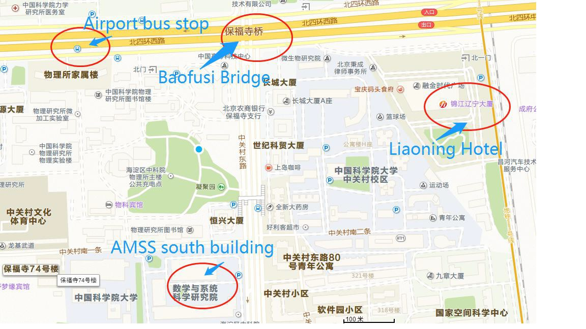
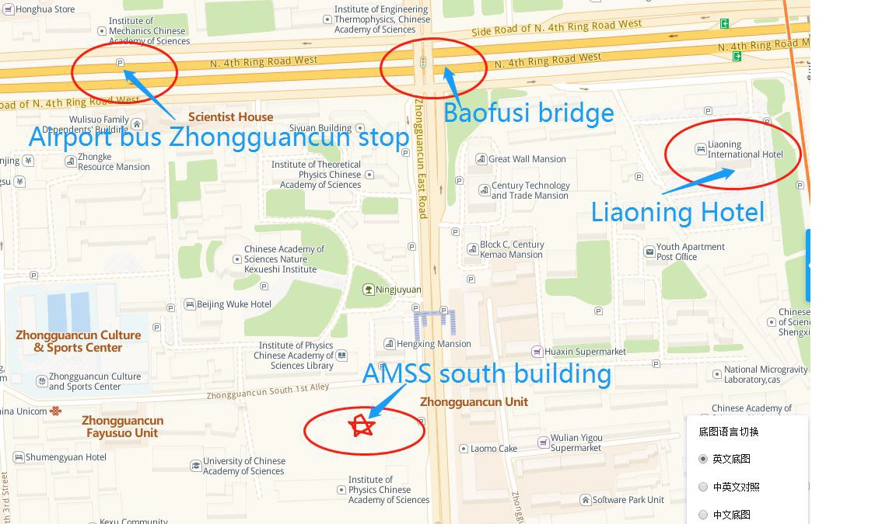

The Fifth Young Scholar Symposium
Date and Venue
June 8-9, 2019
AMSS South Building N219, Chinese Academy of Sciences, Beijing
Scientific Committee
| Gang Bao | Zhejiang University |
|---|---|
| Jin Cheng | Fudan University |
| Hyeonbae Kang | Inha University |
| Jijun Liu | SouthEast University |
| Gen Nakamura | Hokkaido University |
| Gunther Uhlmann | Hong Kong University of Science and Technology and University of Washington |
| Jenn-Nan Wang | National Taiwan University |
| Bo Zhang | Chinese Academy of Sciences |
| Jun Zou | The Chinese Univesity of Hong Kong |
Organizing Committee
| Atsuhide Ishida | Tokyo University of Science |
|---|---|
| Hyundae Lee | Inha University |
| Yi-Hsuan Lin | University of Jyväskylä |
| Hongyu Liu | HongKong Baptist University |
| Xiaodong Liu | Chinese Academy of Sciences |
Conference Agenda
Please click here for the program schedule
Abstract
Please click here for the abstract book.
Hotel Information
Tel /电话: +86 10 6258 9999 Fax /传真: +86 10 8255 0006
北京市海淀区北四环西路甲二. 邮政编码: 100190
No. 2 West Road of the North 4th Ring Road, Haidian District, Beijing, P.R.China. 100190
http://www.liaoninginternationalhotel.com
Local Information
The workshop will take place at AMSS South Building N219


Photos